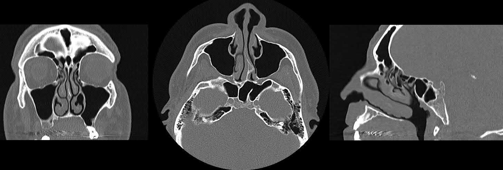

Сверка с PDF рубрикатора выполняется…
Хронический ринит
Клинические рекомендации от 06.10.2026 · взрослые и дети
Основные положения
- Хронический ринит (ХР): воспаление слизистой носа с двумя и более симптомами — заложенность, выделения, чихание, зуд — не менее 1 часа ежедневно не менее 12 недель в год. Кроме атрофического, это «диагноз второй очереди»: он устанавливается после исключения инфекционной и аллергической природы ринита.
- Лечение: устранить причину и триггеры, промывания солевыми растворами. Вазомоторный ринит: назальные кортикостероиды или азеластин с 12 лет. Медикаментозный ринит: постепенная отмена деконгестанта на фоне других средств.
- Деконгестанты — не более 7 дней, при хронических заболеваниях носа и пазух лучше не более 3 дней.
- Операция — симптоматическое лечение: при неэффективности адекватной терапии 6–12 месяцев или при гипертрофическом рините. Турбинэктомия (радикальная конхотомия) не рекомендуется, кроме тяжёлых форм первичного атрофического ринита.
Клиническая картина и классификация
Определение
Хронический ринит: любое воспаление слизистой оболочки носа с двумя и более симптомами — заложенность, ринорея, чихание, зуд в носу — не менее 1 часа ежедневно не менее 12 недель в год. Обычно так называют все хронические риниты, кроме аллергического (неаллергический ринит).
Фенотипы
Фенотипы хронического ринита раздел 1.1 КР
| Фенотип | Определение |
|---|---|
| Вазомоторный (идиопатический) ринит, неаллергическая ринопатия | самый частый фенотип; диагноз после исключения инфекции, аллергии и других форм ХР; в основе — нарушение нервно-рефлекторной регуляции микроциркуляции слизистой |
| Гипертрофический ринит (гипертрофия нижних носовых раковин) | необратимое увеличение нижних раковин как проявление ХР, реже за счёт костной основы; стойкое затруднение носового дыхания |
| Гормональный ринит | при гипотиреозе или изменении уровня половых гормонов: беременность, менопауза, фазы цикла, пубертат |
| Ринит беременных (гестационный) | стойкая заложенность, возникшая во время беременности (чаще во II–III триместре), 6 недель и более, без инфекции и аллергии, проходит за 2 недели после родов |
| Лекарственно-индуцированный ринит | изменения слизистой от системных и назальных лекарственных препаратов |
| Медикаментозный ринит | самый частый лекарственно-индуцированный: длительное применение назальных деконгестантов |
| Профессиональный ринит | назальные симптомы, связанные с рабочей средой; неаллергический — от низкомолекулярных раздражителей (менее 5 кДа), высокомолекулярные чаще вызывают аллергический |
| Ринит курильщика | разновидность профессионального: раздражитель — табачный дым |
| Вкусовой ринит | водянистая ринорея на острую пищу или алкоголь, без чихания, зуда, кожных симптомов и бронхообструкции |
| Ринит пожилых (старческий) | старше 65 лет; водянистая ринорея, усиливается от триггеров; иногда сухость и корки |
| Неаллергический ринит с эозинофильным синдромом (NARES) | эозинофильное воспаление слизистой при отрицательных аллергопробах |
| Атрофический ринит | атрофия слизистой: заложенность, сухость, корки, носовые кровотечения; первичный и вторичный |
| Хронический катаральный ринит | по морфологической классификации Л. Б. Дайняка (1966): постоянное негнойное воспаление; используется при смешанных фенотипах |
- интермиттирующий: симптомы менее 4 дней в неделю или менее 4 недель в году;
- персистирующий: более 4 дней в неделю и более 4 недель в году.
- лёгкая: слабые симптомы, не нарушают дневную активность и сон;
- средняя: мешают работе, учёбе, спорту, нарушают сон;
- тяжёлая: значительно ухудшают качество жизни, без лечения нормальная жизнь невозможна, значительно нарушен сон.
У взрослых и подростков — 10-балльная ВАШ: менее 5 баллов — лёгкое течение, 5 и более — среднетяжёлое или тяжёлое. Около 20% пациентов — смешанные или неклассифицируемые формы.
Этиология
Выделяют воспалительный эндотип (воспаление слизистой) и нейрогенный (нарушение вегетативной регуляции тонуса сосудов и секреции).
Общее для всех форм, кроме атрофического, — гиперреактивность слизистой к неспецифическим триггерам, слабее, чем при аллергическом рините.
Препараты, вызывающие лекарственно-индуцированный ринит таблица 1 в тексте КР
| Группа препаратов | Препараты |
|---|---|
| Нестероидные противовоспалительные (M01A) | диклофенак, кеторолак, целекоксиб |
| Альфа-адреноблокаторы (G04CA, C02CA) | алфузозин, доксазозин, силодозин, тамсулозин |
| Антиадренергические центрального действия (C02A) | клонидин, метилдопа |
| Агонисты дофаминовых рецепторов (N04BC) | пирибедил |
| Бета-адреноблокаторы (C07A) | атенолол, бисопролол, карведилол, метопролол, пропранолол |
| Противоопухолевые (L01) | анагрелид |
| Антитромботические (B01) | цилостазол, дипиридамол |
| Для лечения эректильной дисфункции (G04BE) | силденафил, тадалафил, варденафил |
| Ингибиторы АПФ (C09A) | каптоприл, эналаприл, лизиноприл, рамиприл |
| Психолептики (N05) и психоаналептики (N06) | алпразолам, амитриптилин, хлорпромазин, миансерин, рисперидон, тиоридазин; гинкго билоба листья |
| Ингибиторы кальциневрина (L04AD) | циклоспорин |
| Эстрогены (G03C) | — |
| Диуретики (C03) | гидрохлоротиазид |
| Противоэпилептические (N03A) | габапентин |
Вещества, вызывающие профессиональный ринит таблица 2 в тексте КР
| Вещество | Профессия, категория населения |
|---|---|
| Высокомолекулярные (более 5 кДа), аллергический ринит: зерновая мука; эпидермис животных; латекс | пекари, пищевая промышленность; лаборатории, животноводство, скотобойни, ветеринары; медработники, лаборатории, клининг |
| Низкомолекулярные (менее 5 кДа), неаллергический ринит: персульфаты; древесная пыль; формальдегиды; выхлопные газы; бензол, толуол; тальк; аммиак, растворители; табачный дым | парикмахеры; столяры, деревообработка; строители, химпром, лаборатории, морги; автомеханики, дорожные рабочие, жители мегаполисов; маляры; косметическая промышленность, лаборатории, медработники; химпром, лаборатории; курящие и их окружение |
Первичный атрофический ринит обычно у людей старше 50 лет, чаще у отдельных этнических групп (юг Азии, Африка); вторично присоединяется Klebsiella ozaenae. Вторичный атрофический ринит развивается чаще после ринохирургии (прежде всего на нижних раковинах), реже от назальных препаратов, лучевой терапии, при гранулематозе с полиангиитом.
Клиническая картина
Выраженность симптомов по фенотипам таблица 3 в тексте КР
| Фенотип | Заложенность | Ринорея | Зуд, чихание | Гипосмия |
|---|---|---|---|---|
| Старческий | ++ | +++ | + | ++ |
| Профессиональный | ++ | + | ++ | + |
| Медикаментозный, лекарственно-индуцированный | +++ | + | + | + |
| Гормональный | ++ | ++ | + | + |
| Вкусовой | ++ | +++ | + | + |
| Вазомоторный | ++ | ++ | ++ | ++ |
| NARES | ++ | ++ | + | +++ |
Патогномоничных симптомов нет.
Общие симптомы, кроме атрофического ринита- заложенность носа;
- передняя и задняя ринорея;
- чихание, зуд;
- гипосмия.
Глазных симптомов, в отличие от аллергического ринита, нет; триггеры действуют слабее.
Течение- постоянные симптомы: старческий ринит, NARES, медикаментозный, тяжёлый профессиональный;
- только при воздействии причины: лёгкий профессиональный, вкусовой;
- волнообразное: вазомоторный и гормональный;
- лекарственно-индуцированный: зависит от схемы и длительности приёма препарата.
КТ околоносовых пазух в трёх проекциях

Атрофический ринит
- сухость и раздражение в носу, корки, носовые кровотечения;
- заложенность и снижение обоняния;
- при тяжёлом течении — полное отсутствие носового дыхания, не восстанавливающееся после деконгестантов, и аносмия.
Наиболее тяжело протекают первичный атрофический ринит и вторичный, связанный с системными аутоиммунными гранулематозными полиангиитами: поражаются хрящевые и костные структуры вплоть до перфорации перегородки носа, изменения формы наружного носа и секвестрации раковин.
Первичный атрофический ринит у детей встречается крайне редко; вторичный у детей бывает чаще первичного, но реже, чем у взрослых.
В учебнике: заболевания полости носа. Анатомия и физиология: нос, околоносовые пазухи.
Диагностика
Чётких общих критериев нет. Формула фенотипа: периодические или постоянные симптомы ринита + связь с определённым внешним или внутренним фактором (после исключения инфекции и аллергии).
Смешанные формы ринитов существуют: признаки инфекции или аллергии не исключают у пациента фенотип ХР.
Критерии диагноза по фенотипам раздел 2 КР
| Фенотип | Критерии диагноза |
|---|---|
| Ринит беременных |
|
| Медикаментозный |
|
| Лекарственно-индуцированный |
|
| Профессиональный |
|
| Ринит пожилых |
|
| Вкусовой |
|
| NARES |
|
| Вазомоторный |
|
| Гормональный |
|
| Атрофический |
|
Жалобы, анамнез и осмотр
- длительность, что спровоцировало начало, динамику жалоб, влияние на сон и активность;
- лечение и его эффект, нежелательные явления;
- симптомы вне эпизодов ОРИ;
- сопутствующие заболевания, прежде всего аллергию;
- ринохирургические вмешательства и манипуляции в носу.
Всем пациентам с ХР показан первичный осмотр оториноларинголога.
Цитологическое исследование мазка из носа
- подростки и взрослые с персистирующими симптомами и выраженным нарушением обоняния при исключённом аллергическом рините: подтверждение или исключение NARES.
Для остальных фенотипов рутинно не проводят: низкие чувствительность и специфичность.
Посев отделяемого из носа
- признаки первичного атрофического ринита: выявление Klebsiella ozaenae.
Эндоскопия полости носа и носоглотки
- стойкая выраженная одно- или двусторонняя назальная обструкция: оценка полости носа и дифференциальная диагностика.
КТ или конусно-лучевая томография пазух
- подозрение на сопутствующий хронический риносинусит.
Конусно-лучевая томография — вариант КТ с меньшей лучевой нагрузкой.
Консультации специалистов
- все фенотипы, кроме атрофического ринита: подтверждение или исключение аллергического ринита.
При аллергическом рините сопутствующий фенотип ХР выделяют, если сенсибилизация не объясняет течение (например, круглый год при сенсибилизации только к пыльце) или нет контроля при максимальном лечении.
- взрослые с ХР без диагностированной эндокринной патологии, но с признаками гипотиреоза.
- утомляемость, сонливость;
- сухость кожи, выпадение волос;
- замедленная речь, охриплость;
- отёчность лица, пальцев;
- запоры, зябкость, снижение памяти, подавленность.
- дети с ХР после исключения аллергического и медикаментозного ринита, с признаками врождённого гипотиреоза;
- девочки пубертатного возраста с ХР после исключения аденоидов, аденоидита, аллергического и медикаментозного ринита.
- взрослые с подозрением на профессиональный ринит: установление связи с производственной средой.
Лечение
Ключевым направлением лечения является устранение или минимизация влияния причинного фактора, если его удаётся установить.
За исключением гипертрофической формы хронический ринит изначально не требует операции, а необоснованное вмешательство нередко вредит. Операция остаётся лишь симптоматическим методом: она может улучшить носовое дыхание, но почти не влияет на ринорею, чихание, зуд и обоняние.
Все формы хронического ринита, кроме некоторых видов атрофического, не угрожают жизни и не создают высокого риска тяжёлых осложнений. Поэтому консервативное лечение проводят планово и амбулаторно, а операцию выполняют планово в условиях стационара.
Базисная терапия
- всем пациентам — ограничение причинных факторов и триггеров.
- табачный дым и пар электронных сигарет;
- перепады температуры, запылённость, резкие запахи;
- пряности, алкоголь;
- нарушение сна, гиподинамия, стресс.
- все фенотипы хронического ринита, в том числе ринит беременных: промывание или орошение носа морской водой, стерильными солевыми растворами.
Способ, кратность, изо- или гипертонический раствор и длительность выбирает врач по фенотипу и течению.
Вазомоторный ринит
- вазомоторный ринит у пациентов старше 12 лет.
- беклометазон: 200–400 мкг в сутки, курс не более 3 месяцев;
- мометазонoff-label: 200 мкг 1 раз в день, 6 недель;
- флутиказонoff-label: 200 мкг 1 раз в день, 3 месяца.
Минимальная эффективная доза; предупредить о носовых кровотечениях. Не применять при атрофии слизистой, в том числе при атрофическом рините.
Азеластин назально назначают курсом 2–3 недели пациентам старше 12 лет с вазомоторным ринитом. Данных о пользе более длительного курса нет.
- смешанные фенотипы с сопутствующим аллергическим ринитом.
- азеластин + флутиказон, мометазон + олопатадин: старше 12 лет;
- азеластин + мометазон: старше 18 лет.
Обострение и медикаментозный ринит
При обострении с выраженной заложенностью назначают оксиметазолин коротким курсом до 7 дней. Деконгестанты уменьшают только заложенность. Предпочтительны назальные препараты без антисептиков-консервантов.
- взрослые, которым деконгестант нужен дольше недели при обострении ХР или острой инфекции носа с выраженной заложенностью.
- оксиметазолин спрей вместе с мометазономoff-label 100–200 мкг в сутки, 15–20 дней.
Медикаментозный ринит: деконгестант отменяют постепенно, сначала уменьшая кратность и разовую дозу, одновременно назначают морскую воду, назальные кортикостероиды, противоаллергические средства. Требование одномоментной отмены часто не выполняется.
Атрофический и хронический катаральный ринит
При атрофическом рините назначают увлажняющие средства на основе натрия гиалуроната.
При тяжёлом первичном атрофическом рините с выделением Klebsiella ozaenae назначают системные антибиотики с учётом чувствительности возбудителя.
Пациентам старше 18 лет с хроническим катаральным ринитом и гнойным отделяемым назначают фрамицетин.
Пациентам старше 18 лет с хроническим катаральным ринитом и вязким секретом назначают назальный спрей ацетилцистеин + туаминогептан.
Пациентам с вазомоторным, медикаментозным или лёгким атрофическим ринитом, приверженным такому лечению, возможно назначение гомеопатических средств, зарегистрированных в России как лекарственные препараты, по показаниям инструкции.
При вазомоторном или медикаментозном рините с ограничениями медикаментозного лечения показана консультация физиотерапевта.
Хирургическое лечение
- при гипертрофическом рините операция проводится всем пациентам;
- при вазомоторном, медикаментозном рините и NARES — при наличии обоснования, при старческом, профессиональном и атрофическом — в редких случаях;
- при гормональном, гестационном, вкусовом и лекарственно-индуцированном рините данных о пользе хирургического лечения нет.
- адекватное лечение 6–12 месяцев не улучшило качество жизни или операция может значительно его улучшить.
Принцип минимальной травматизации слизистой; пациента предупреждают о возможной нестойкости результата и повторных вмешательствах.
- гипертрофический, вазомоторный, медикаментозный ринит или NARES, рефрактерные к лечению.
Вмешательство выполняют под эндоскопическим контролем.
У дошкольников и младших школьников чаще консервативный подход; у детей все манипуляции на раковинах — только в подслизистом слое.
Варианты: передняя и (или) задняя конхотомия, пластика раковин, подслизистая вазотомия, в том числе с латерализацией костной части; лазерные технологии. Сохранение слизистой уменьшает нарушения мукоцилиарного клиренса, синехии и корки.
- тяжёлое, медикаментозно неконтролируемое течение.
При выраженной заложенности нейрэктомию сочетают с операцией на раковинах. При атрофическом рините она не показана.
- гипертрофический ринит с увеличенным костным остовом нижней раковины.
Турбинэктомия (радикальная конхотомия) не рекомендуется, кроме тяжёлого первичного атрофического ринита.
Последствия турбинэктомии- нарушение воздушного потока;
- корки, инфицирование;
- риск синдрома «пустого носа».
- тяжёлый первичный атрофический ринит.
Вмешательство паллиативное, облегчает уход.
- тяжёлый ятрогенный атрофический ринит с синдромом «пустого носа».
Лечение после вмешательства на нижних носовых раковинах
- ранний и поздний послеоперационный период: промывание или орошение изотонической морской водой, солевыми растворами;
- взрослые с тяжёлым первичным атрофическим ринитом после хирургического лечения: системные антибиотики.
При субатрофических проявлениях после операции на раковинах назначают увлажняющие средства с натрия гиалуронатом: они облегчают туалет носа и ускоряют восстановление слизистой оболочки.
Техника операций в учебнике: конхотомия, вазотомия, латероконхопексия.
Алгоритм действий врача при хроническом рините
- 1
Пациент с клинической картиной ринита
Пациент предъявляет жалобы на заложенность носа, выделения, чихание или зуд, которые беспокоят не менее 1 часа ежедневно. Клиническая картина соответствует риниту, но его природа пока не определена.
- 2
Диагностика
Хронический ринит, кроме атрофического, является диагнозом второй очереди и устанавливается после исключения инфекционной и аллергической природы ринита. Чётких общих критериев нет: диагноз основывается на сочетании периодических или постоянных симптомов со связью с определённым внешним или внутренним фактором.
Уточняют длительность жалоб, провоцирующий фактор, влияние на сон и активность, проведённое лечение и сопутствующие заболевания, прежде всего аллергию. Первичный осмотр оториноларинголога показан всем пациентам; по показаниям выполняют цитологическое исследование мазка из носа, эндоскопию, КТ пазух, назначают консультации аллерголога-иммунолога и эндокринолога.
- 3
Диагноз подтверждён?
Диагноз хронического ринита устанавливают по критериям соответствующего фенотипа после исключения аллергического ринита и инфекции. Выявленная инфекционная или аллергическая причина не исключает сопутствующий фенотип хронического ринита: смешанные формы существуют.
Подтверждён ли диагноз хронического ринита?
- 4
Продолжить диагностический поиск
конец алгоритмаКритерии ни одного из фенотипов хронического ринита не выполняются. Диагностический поиск продолжают, исключая другие причины заложенности носа и ринореи.
- 5
Консервативная терапия
Ключевым в лечении является устранение или ослабление влияния причины. Базисная терапия включает ограничение причинных факторов и триггеров (табачный дым, перепады температуры, запылённость, резкие запахи, пряности, алкоголь) и промывание или орошение носа морской водой либо стерильными солевыми растворами.
При вазомоторном рините у пациентов старше 12 лет назначают интраназальные глюкокортикостероиды или азеластин (курсом 2–3 недели). При медикаментозном рините деконгестант отменяют постепенно, одновременно назначая морскую воду, назальные кортикостероиды и противоаллергические средства. Деконгестанты применяют не более 7 дней, при хронических заболеваниях носа и пазух предпочтительно не более 3 дней.
- 6
Симптомы сохраняются?
Оценивают результат адекватной консервативной терапии. Операция является симптоматическим лечением: она может улучшить носовое дыхание, но почти не влияет на ринорею, чихание, зуд и обоняние.
- 7
Хирургическое лечение
конец алгоритмаХирургическое лечение показано, если адекватная терапия в течение 6–12 месяцев не улучшила качество жизни, а также при гипертрофическом рините. Применяют подслизистую вазотомию или пластику нижних носовых раковин под эндоскопическим контролем с минимальной травматизацией слизистой оболочки. Турбинэктомию (радикальную конхотомию) не выполняют, за исключением тяжёлого первичного атрофического ринита.
Плановая операция проводится в условиях стационара; пациента предупреждают о возможной нестойкости результата и повторных вмешательствах.
Профилактика и диспансерное наблюдение. Показания к госпитализации
Показания к госпитализации
Диагностика и консервативное лечение проводятся амбулаторно, плановое хирургическое лечение — в стационаре.
Показания к плановой госпитализации для операции- вазомоторный и медикаментозный ринит (реже тяжёлый NARES, гормональный, профессиональный, сенильный) без эффекта адекватного лечения 6–12 месяцев;
- гипертрофический ринит с увеличенным костным остовом, постоянной выраженной заложенностью и значительным снижением качества жизни;
- тяжёлый первичный атрофический ринит;
- тяжёлый ятрогенный атрофический ринит с синдромом «пустого носа».
- хирургическое лечение выполнено в необходимом объёме;
- удовлетворительное состояние, нет острого инфекционного воспаления.
Профилактика
Не применять назальные деконгестанты более 7 дней; при хронических воспалительных заболеваниях носа и пазух лучше ограничиться 3 днями.
- отказ от курения и электронных сигарет;
- группа риска профессионального ринита: промывания изотоническими растворами и средства индивидуальной защиты;
- вкусовой ринит в анамнезе: отказ от пряностей и (или) алкоголя;
- при назначении препаратов, вызывающих ринит, предупредить пациента и при появлении симптомов решить вопрос об отмене или замене;
- функциональный подход при операциях на нижних раковинах для профилактики ятрогенного атрофического ринита.
Специфической профилактики ринита беременных, гормонального, ринита пожилых, NARES и вазомоторного ринита нет. Медицинская реабилитация не показана.
Коды МКБ-10
Источник и актуальность
Журнал сверки
Неточности и противоречия в тексте рекомендации
- Существенных неточностей и противоречий, влияющих на диагностику и лечение, не найдено.